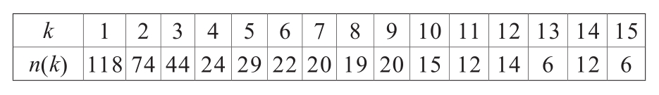
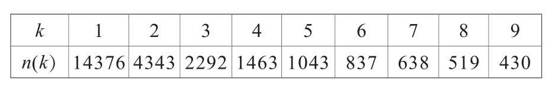

虽然亚历山大·仲马（Alexandre Dumas）本身是一个不乏创造力的人，但他曾说：“上帝之后，莎士比亚是创造最多的人。”莎士比亚确实有着巨大的成就，他在自己的作品中应用了31534个不同的单词。由此我们不禁好奇：莎士比亚认识却没有使用过的单词有多少呢？
这个问题简直是天方夜谭，就仿佛在问我们，我们尚未做过的梦有多少个是一样的。
尽管如此，我们还是能用数学的方式计算出莎士比亚的词汇量。但现在，让我们先用一种截然不同的方式开始计算吧。
1940年前后，为了捕捉蝴蝶，生物学家史蒂文·科贝特（Steven Corbet）在亚洲的原始森林里生活了两年。他捕捉了很多种蝶类，其中有118种他每种只捕捉1只，有74种他每种捕捉2只，其余种类以及捕捉数量如表所示［k为只数，n(k)表示种类］：

如果科贝特两年后重返这片森林，你能估算出未被他捕捉的蝴蝶的种类吗？
数学家古德（Good）和图尔敏（Toulmin）是这样回答的：假设在一定时间间隔内捉到每种蝴蝶样本的概率与时间间隔的长度成正比，并且不同类别之间变化的速率与该类别出现的频率相关，利用统计学分析，这种假设将我们引向了一种随机试验，我们在之前足球比赛进球的问题当中也应用过，那就是泊松分布。
因此，某个物种在第二个两年时间里出现，而没有在第一个两年时间里被观察到的可能性为e-m(a)×［1-e-m(a)］，其中m(a)是每两年捕捉到的物种样本的平均数量。
接下来，我们将所有物种的捕捉结果进行简单的计算，最后就能得出新物种的估算值了：n(1)－n(2)+n(3)－n(4)+…=118－74+44－24+…=75。
在接下来两年的考察中，科贝特可以首次发现75个新的蝴蝶品种。
一场足球赛中的进球数、某个物种被捕捉的样本以及一篇文章中某个单词出现的频率……从统计学的角度分析，这些数据都始终与泊松分布有关。这个方法之所以可以使用，是因为作家都有自己的词汇表。每位作家写作时使用的词汇表中单词的频率是不同的，但是对这位作家来说却几乎是不变的，因此该作家的某一篇作品就可以视为符合频率分布的样本。
1968年，莎士比亚研究学者——马文·斯皮瓦克（Marvin Spivack）计算得出，莎士比亚的作品中共出现过884647个单词，其中有14376个单词在他的作品中仅出现过一次，4343个单词出现过两次……以下是对斯皮瓦克的表格的部分摘录［k为出现的次数，n(k)为单词数量］：

假设发现了全新的莎士比亚作品，也许主题和内容不尽相同，但篇幅与其他作品几乎一致。这个作品中会出现很多他实际使用过的单词，但一定也会存在很多新单词。
那么在这部假定的莎士比亚作品当中，有多少单词未曾出现在他实际的作品当中呢？答案就来自上述的交替函数：14376－4343+2292－1463+…=11617。
同样的方法可以在假定的莎士比亚的第三部、第四部乃至更多同样篇幅的作品中重复运用。每当新的样本出现，未曾出现过的新词的数量都会重新估计，因此每次未出现过的新词数量就会更少。当该操作重复的次数足够多时，就不会再有新词出现了，此时可以得出莎士比亚运用了所有他认识的单词。
数学家埃夫隆（Efron）和齐斯太兹（Thisted）用这种办法，从第二篇至最后一篇中抽样得出了35000个新单词的估计数值。也就是说除去31534个他使用过的单词之外，莎士比亚还认识大约35000个单词，但从未使用过它们，那么他的词汇量大概是66500个。这真是个不小的数据，据说联邦德国首任总理康拉德·阿登纳（Konrad Adenauer）只有800个词汇量，这样一比较，莎士比亚是不是更厉害呢？
如果您对上述计算的必要前提提出质疑，那么可以看看这个例子：1985年人们发现了一篇新诗，其非常有可能出自莎士比亚之手。人们使用了这一估算方法，发现这首诗中出现的新词数量与估算数据一致。这也是对该理论的绝佳证明。
我认为这是一个了不起的案例。这个例子展示了人们如何应用数据处理问题的能力，凭借可靠的方式把一些不可能的事情变为可能的，计算“无形”的事物，而这些都要感谢数学。